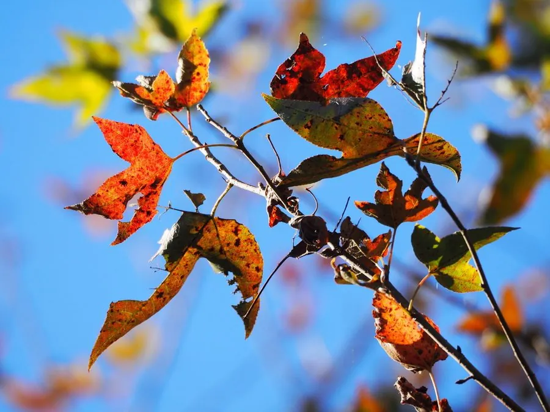

乔木 · 植物界
枫香 Liquidambar formosana

中国南方常见的落叶大乔木，叶片掌状三裂、入秋变红，树脂与果实均可入药，是著名的秋色叶树种。
- 分类
- 门被子植物门纲木兰纲目虎耳草目科枫香科属枫香属
- 栖息环境
- 海拔 1000 米以下的低山丘陵、山坡与村旁，喜光耐瘠薄
- 地理分布
- 中国长江流域以南及华东、华中、西南地区，越南、老挝也有分布
- 保护级别
- 暂无评估；中国未列入国家重点保护野生植物名录
物种志
枫香为落叶乔木，高可达 40 m，树干通直，树皮灰褐色、方块状剥落；叶片掌状 3 裂，稀 5 裂，边缘具锯齿，幼叶常带红色。花期 3–4 月，花单性同株，雄花序为葇荑花序，雌花序为头状花序；果实为球形聚合果，由多数蒴果组成，具刺状宿存花柱，成熟时开裂散出带翅种子，果序俗称“路路通”。
枫香分布于中国长江流域以南及华东、华中、西南地区，喜光、喜温暖湿润，耐干旱瘠薄，适宜酸性或中性土壤，是南方低山丘陵常见的落叶阔叶树种。秋季叶色转为鲜红或橙红，是重要的秋色叶观赏树；树脂即枫香脂，可入药，有活血止痛之效；果序“路路通”也是中药；木材可供建筑与家具用。枫香与槭树类常被统称为“枫”，但前者果实为球形蒴果序，后者为双翅果。
形态与习性
- 株高可达 40 m，树皮方块状剥落
- 花期3–4 月，花单性同株
- 果期10–11 月，球形果序俗称“路路通”
- 光照喜光，不耐长期荫蔽
- 水分耐干旱瘠薄
- 土壤酸性至中性壤土
- 主要用途秋色叶观赏、木材、枫香脂与路路通入药
趣味知识
- 枫香的果实是球形蒴果序，干后带刺，中药称“路路通”。
- 枫香叶片掌状三裂，入秋变红，是南方山地著名的秋色叶树种。
- 枫香与槭树都俗称“枫”，但枫香果实是球状蒴果序，槭树果实是双翅果。
- 枫香树脂即中药“枫香脂”，具有活血止痛的功效。